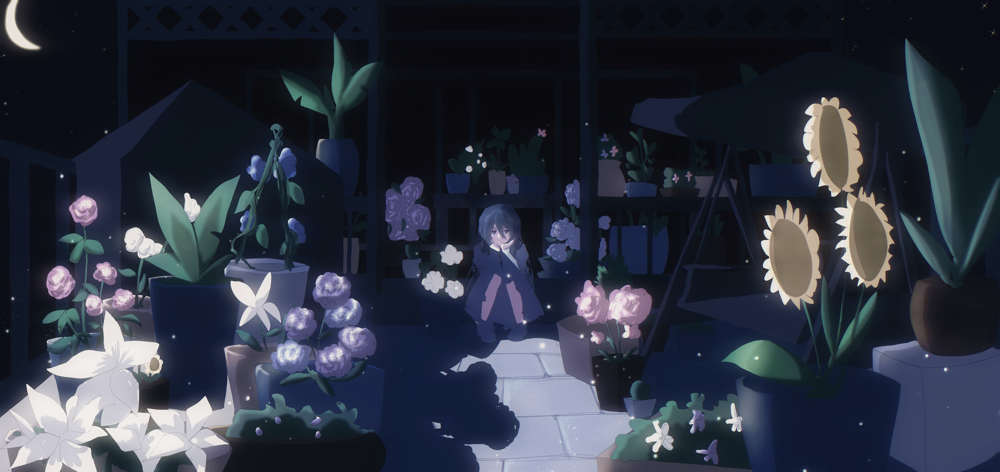

花园

Art by Haze & Moshi
作品介绍
《花园》是一首写给夜晚的安眠曲。
它属于Ipomoea alba，却以完全不同的方式出现，
不是前卫核的锋利，也不是情绪剧烈的震荡，而是蓝紫色、带着一点淡粉的月光的清亮与柔软。
我在创作时不断想到一个画面，
“在夜晚中，一朵一朵种下的花，都是我某一刻想到他的情感。”
这些花一开始是强烈、无法接受的难过，是恨意，是对离开的抗拒，
后来慢慢变成了淡淡的在意，偶尔的感谢，再回望时又混杂着讨厌。
这些情绪都被悄悄埋进土里，最后在心里长成了一座没人看见的花园。
现实中我家花园并没有种过任何花，所以这座花园完全是一种抽象的、只存在于夜色里的想象。
整首歌轻盈、干净、但情感始终清晰。
清音吉他以混合拍轻轻摆动，让旋律有着“听得见，却抓不住”的落空感，像那些来来回回不能完全放下的思绪。
这种若有若无的节奏感，一种快要消失，却又全部沉重留下来的感情。
可惜的是，我当时因为带贝斯没能带吉他上学现买的一个只要几千块的ibz始终敲不响那个泛音:(
尽管主题与系列中的其他作品一样指向同一个对象，但《花园》几乎是我能写出的最温柔的。
它不是尖锐的，也不是控诉的，而是一种夜晚才会出现的理解，
明明经历过那么多情绪，却在最终被时间磨成平静。
在最后的电钢琴里，我又加入了Ipomoea alba的旋律。
那一刻的情绪既是呼应，也是遗憾，把深处无法言说的东西重新举起来，再轻轻放回夜色里。
在这里带着一丝不甘，却最终落回轻微下坠式的平静。
像是一首站在回忆边缘唱出的低语。
是一首为了入眠而写，却又让人不愿睡去的歌。
歌词（Part 1）
每次想到你 都会种下一株
慢慢沉没在 上涨夜幕
时间推着我 你化作的音符
浮在这沉静的风里
每当我沉睡时 你的笑脸浮现
想共度些时间 好好地说再见
你曾经弹奏过 多少黎明与黑夜
都已然消逝在 你画下的句点
清风轻拂过 随手拨弄一束
万籁俱寂时 幻象须臾
裹挟着深夜 怀念那副景色
不知从何时已褪色
歌词（Part 2）
你被时间带走 光阴日月如梭
以前哼唱的歌 如今剩我一个
你曾经弹奏过 多少夕阳与白昼
暗夜始终未明 从离去的那刻
如果那颗星星能降临在你身旁
月光落入的花园
请不要让我入眠